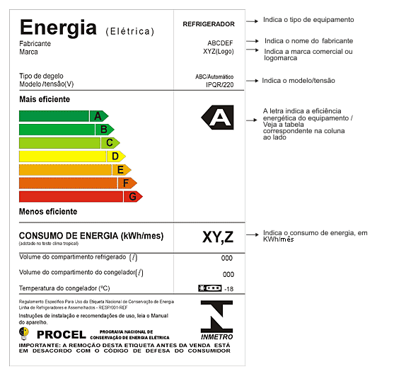
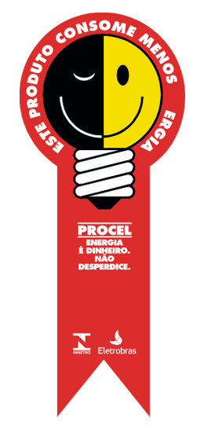
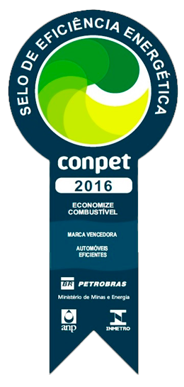

O uso eficiente do ar‑condicionado e a conservação de energia garantem um futuro sustentável para todos.
O consumo consciente de energia significa utilizar os recursos elétricos de maneira racional e eficiente, aproveitando o máximo de seus benefícios sem causar desperdícios. É a prática de repensar hábitos diários para garantir que a energia seja usada apenas quando e quanto for realmente necessária.
No contexto atual, isso é de extrema importância por três motivos principais: o aumento expressivo do consumo energético global, o forte impacto ambiental causado pela necessidade de gerar cada vez mais energia, e o alto custo financeiro associado a esse desperdício.
Diante desse cenário, a CICE (Comissão Interna de Conservação de Energia) atua como uma iniciativa coletiva fundamental. Seu objetivo não é estabelecer regras, mas promover uma mudança de cultura, orientando estudantes e colaboradores para que o uso eficiente da energia seja um hábito natural e compartilhado por todos.
Existe uma forte relação entre o consumo de energia elétrica e a emissão de carbono. Como a maior demanda energética exige mais geração, muitas vezes o sistema precisa recorrer a fontes não renováveis (como usinas termelétricas movidas a combustíveis fósseis).
Consequências diretas: Aquecimento global, severas mudanças climáticas e a escassez de recursos naturais.
O conceito de sustentabilidade aplicado ao uso de energia significa garantir as necessidades do presente sem comprometer a capacidade das gerações futuras de suprir suas próprias necessidades.
É de extrema importância equilibrar o conforto térmico necessário para o estudo e trabalho com a nossa responsabilidade ambiental.
A matemática é simples: energia desperdiçada é igual a custo desnecessário. Esse dinheiro jogado fora poderia estar sendo investido em melhorias estruturais.
Em ambientes institucionais e coletivos, o desperdício afeta todos, pois os recursos que pagam essa conta extra saem do orçamento que beneficia toda a comunidade escolar.
O ar‑condicionado funciona resfriando um volume de ar fechado. Quando há troca constante de ar com o ambiente externo (através de portas ou janelas abertas), o equipamento trabalha muito mais para tentar dar conta da demanda.
Consequência: Maior consumo de energia somado a uma menor eficiência (o ambiente não gela).
Esta atitude simples evita o consumo desnecessário de energia quando o ambiente está vazio.
Lembre-se: Mesmo poucos minutos de ar ligado em uma sala vazia, quando acumulados diariamente ao longo de meses, geram um desperdício significativo de energia e recursos financeiros.
A recomendação técnica e dos órgãos de saúde é manter a temperatura sempre entre 23°C e 25°C.
Temperaturas muito baixas (como 17°C) não fazem o local gelar mais rápido; elas apenas forçam o compressor a não desligar nunca, aumentando drasticamente o consumo de eletricidade.
A manutenção preventiva é crucial. Filtros de ar sujos bloqueiam a saída do ar, reduzindo severamente a eficiência térmica do equipamento.
Isso não apenas aumenta o consumo de energia (pois o ar trabalha "forçado"), como também prejudica gravemente a qualidade do ar respirado no ambiente.
A cultura institucional é formada por hábitos repetidos diariamente. Entender que as pequenas ações individuais geram um impacto coletivo gigantesco é o primeiro passo.
Queremos incentivar a responsabilidade compartilhada: se você for o último a sair, apague a luz e desligue o ar. Se a porta estiver aberta, feche. Não espere que outra pessoa faça.
O papel da CICE não é ser uma "polícia de energia", mas atuar ativamente na conscientização, educação e no monitoramento de resultados, ajudando a construir um ambiente melhor para todos.
Para garantir o conforto sem gastar energia à toa, é essencial instalar a capacidade correta no seu ambiente.
O BTU (British Thermal Unit) é a unidade de medida utilizada para definir a capacidade de refrigeração que um aparelho possui.
A capacidade exata não depende apenas da metragem. Você deve considerar:
Imagine um quarto de 12m², onde dormem 2 pessoas, com 1 TV ligada.
• 12m² × 600 = 7.200
• 1 pessoa extra × 600 = 600
• 1 TV × 600 = 600
TOTAL = 8.400 BTUs
*Neste caso, o ideal seria comprar um aparelho padrão de mercado de 9.000 BTUs para fixação do cálculo.
Você pode melhorar a eficiência da sala para não precisar de um aparelho tão forte:
A eficiência energética começa nos nossos lares. Adote estas práticas valiosas no seu dia a dia.
Evite o stand-by: a luz vermelha acesa consome energia passivamente. Desligue da tomada equipamentos de uso esporádico (como micro-ondas e TVs de quartos vazios).
Aproveite ao máximo a brisa natural. Abra as janelas em horários estratégicos (início da manhã ou fim de tarde) para refrescar o ambiente sem custo algum.
Priorize lâmpadas LED. Elas consomem até 80% menos energia, não esquentam o ambiente e possuem uma vida útil muito maior do que as fluorescentes.
É um dos maiores vilões da conta de luz. Mantenha a chave na posição "Verão" (economia de até 30%) e reduza o tempo de banho, especialmente no frio.
Verifique a vedação da borracha da porta. Nunca forre as prateleiras com panos ou plásticos e jamais coloque roupas ou tênis para secar na grade traseira.
Acumule o máximo de roupas para lavar e passar de uma única vez. O aquecimento inicial do ferro elétrico é a fase em que ele mais consome energia.
Feche cortinas e persianas em paredes ou janelas que recebem sol direto à tarde. Isso reduz drasticamente o aquecimento da casa, diminuindo a necessidade de usar ventiladores ou o ar‑condicionado na potência máxima quando você chegar.
Na hora da compra, é fundamental entender o que cada selo representa para identificar os produtos mais eficientes (Sempre busque aparelhos Classe A). Conheça as principais certificações brasileiras:

Gerenciado pelo Inmetro, utiliza faixas coloridas para classificar os equipamentos. A letra 'A' (faixa verde superior) aponta o equipamento de maior eficiência e menor consumo de energia. Quanto mais próximo da letra 'E' (vermelho), maior o gasto de energia mensal.

É um prêmio de eficiência, um selo extra de qualidade. Se um eletrodoméstico tem este selo colado nele, significa que ele foi testado e comprovado como o melhor e mais econômico dentro de toda a sua própria categoria (os melhores dentre os Classe A).

Segue exatamente a mesma lógica rigorosa do selo Procel, porém é destinado à avaliação e eficiência de aparelhos movidos a derivados de petróleo e gás natural. Procure por este selo ao comprar fogões, fornos a gás e aquecedores de água residenciais.
Teste o que você aprendeu. Clique na alternativa que julgar correta.
Gostaríamos de reforçar a extrema importância das pequenas atitudes no seu dia a dia. Uma porta fechada ou um clique no interruptor parecem insignificantes isoladamente, mas coletivamente mudam o rumo do nosso planeta.
Nunca se esqueça da nossa principal equação:
Economia de Energia = Economia Financeira + Proteção Ambiental
Incentivamos você, leitor, a aplicar cada um destes conhecimentos não apenas no ambiente acadêmico ou de trabalho, mas dentro da sua própria casa, influenciando sua família e amigos.
"O futuro sustentável não é construído com grandes sacrifícios esporádicos, mas sim com pequenos hábitos diários que todos nós podemos praticar hoje!"